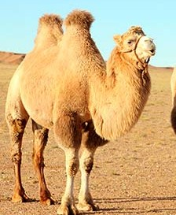

The four Illams and two camels are camelids. Camelids tend to be large and strictly herbivorous. Camelids differ from ruminants in several ways. They have three chambered rather-than four-chambered digestive tract; an upper lip that is split in two with each part seperately mobile; and an isolated incisior in the upper jaw . They have long legs that, because they lack tensor skin to bridge between thigh and body, look long still.(from Wikipedia)
|  | Camelid Comparison | |||
|---|---|---|---|---|
| # of humps | Indigenous region | Spits ? | Produces Wool ? | |
| Camels(bactrian) | 2 | Africa/Asia | Llama | Llama |
| Llamas | 1 | Andes Moutains | ||